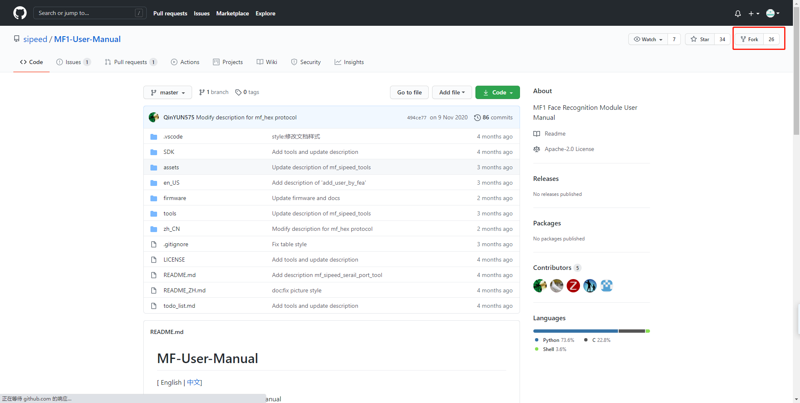
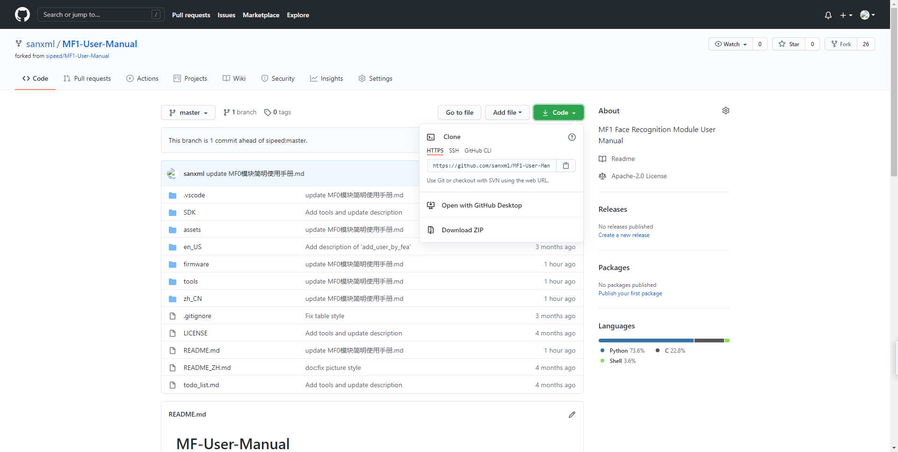
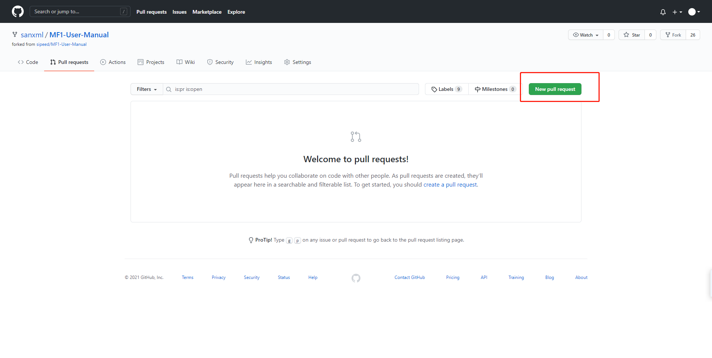

对开源仓库提交PR
fork
选择自己想要的开源项目，fork到自己的仓库 
clone
将远程仓库克隆到本地仓库
git clone https://github.com/sanxml/MF1-User-Manual.git // 克隆远程仓库到本地
git remote add https://github.com/sanxml/MF1-User-Manual.git // 本地仓库与远程仓库连接
git remote add upstream https://github.com/sipeed/MF1-User-Manual // 与上游远程仓库连接
git remove -v //查看连接

创建分支
git checkout -b XXX //创建分支
修改代码并提交
git add XXX // 添加修改
git commit -m "修改了XXX" // 添加修改文档
git push origin master // 提交修改
提交PR
在GitHub上找到fork的仓库，找到 New pull request  然后点Create pull request写好名字，写好说明，提交，就OK啦。